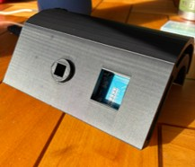
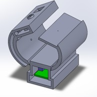
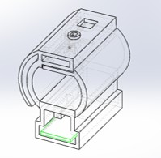
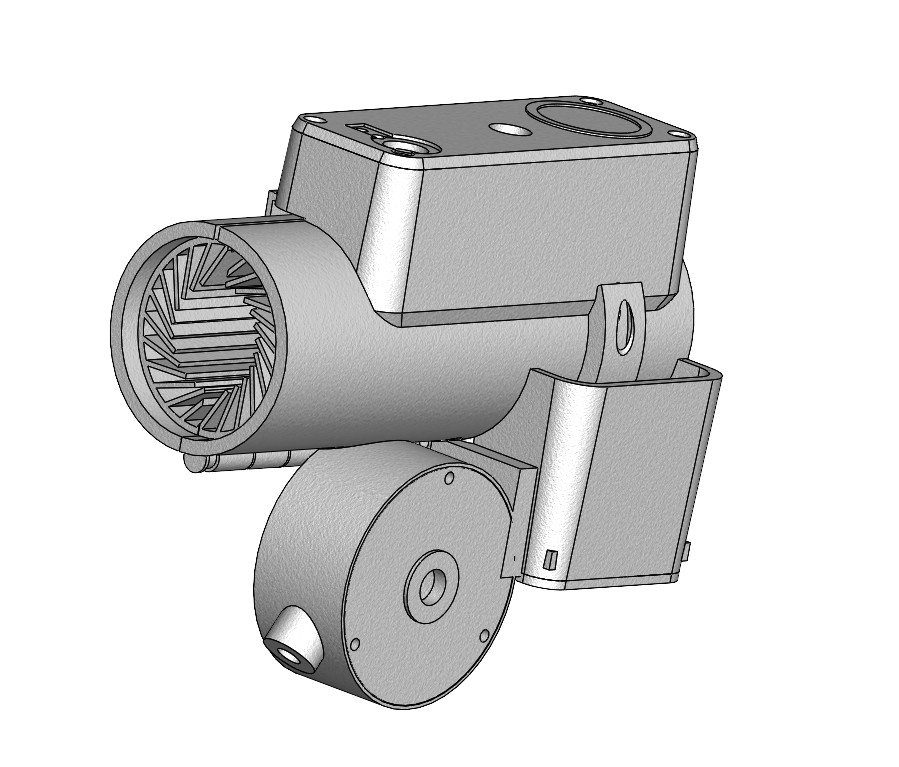
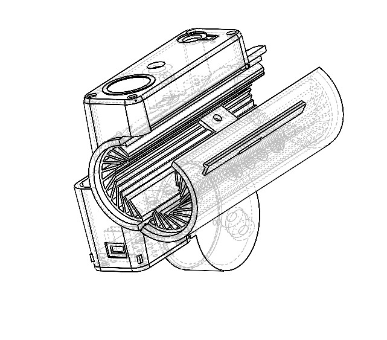
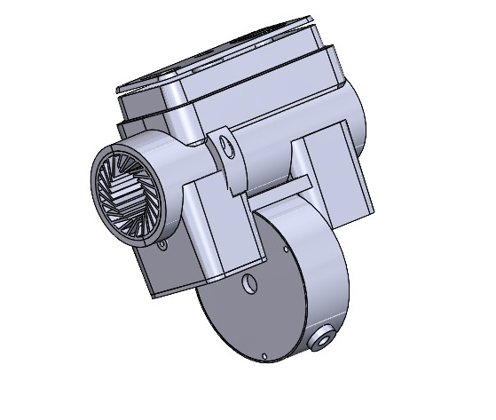
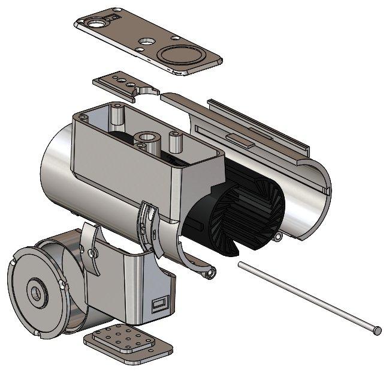
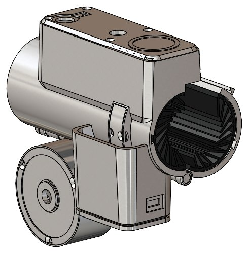

Read the RFID fob and reject any credential that is not authorized.
Mechatronics · Product Iteration · Prototyping
Automatic RFID Bike Lock
A tap-to-lock mechanism that combines RFID authentication, electromechanical actuation, state feedback, and serviceable 3D-printed packaging.
Personal Project · Independent · Dec 2025–Present · College Station, TX

v.08Current design
4 stepsControl sequence
RFIDKeyless authentication
OutdoorDesign target
01
The problem
I bike to class every day at Texas A&M, a campus with something like 30,000 engineering students alone, so by mid-morning every rack is packed. I would get there early, grab a good spot, and come back at midday to find my bike crammed in with a hundred others. Picture the start of the semester: it is 110 degrees, you are already sweating, and you are reaching blind between jammed frames and handlebars, trying to find your lock, hold it steady, and dial in a combination you can barely see.
There had to be a better way. This lock still takes a moment to secure when you park, but coming back is the easy part: tap a card, a fob, or your phone and the cable retracts into the housing. Tap and go.
02
System behavior
The product has to make its state obvious and execute the same sequence reliably every time. An Arduino Nano coordinates identity, motion, and user feedback.
Drive the solenoid and retraction mechanism to change the lock state.
Use LED and audio feedback so the user knows whether the lock is secure.
03
v0.0 · Prove the loop
The first prototype answered the highest-risk question first: could the electronics authenticate a fob, actuate the mechanism, and report the new state? Packaging was intentionally a simple wedge enclosure built around function, not final form.



Core loop proven
The prototype authenticated, actuated, and confirmed state reliably. That cleared the way for mechanical integration and packaging iterations.
04
v.04–v.05 · Refine in CAD
Before committing to new hardware, I iterated the mechanism entirely in CAD, organizing the drive motor, housing, and enclosure into a tighter, more manufacturable package.



05
v.06 · Package the mechanism
The first major redesign moved the system into a compact cylindrical architecture and separated functional zones so the mechanism could still be assembled and serviced.
Retraction drive + spool
Organized the motion hardware around the lock body instead of the original wedge enclosure.
Dedicated electronics bay
Separated RFID and control hardware from the locking and drive components.
Bolt-on access panels
Kept internal components reachable for testing, repair, and continued iteration.


06
v.08 · Integrate for use
The current revision stacks the control and RFID boards above the lock barrel, refines the drive shaft and cylindrical body, and adds a bolt-down foot for mounting to a frame or rack.

Retraction + weather protection
The lock currently authenticates, actuates, and reports state. Current work targets the retraction drive and weatherproofing for daily outdoor use.